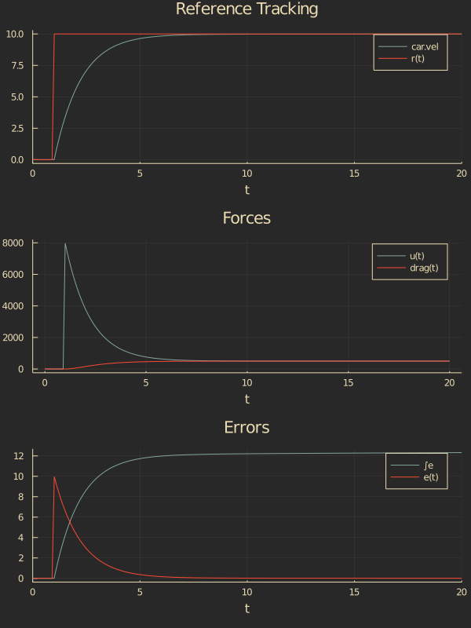

Cruise Control
Let's see how we can use SimulationLogs for a typical controls simulation.
First, we'll start with a simple model of a car using ComponentArrays.jl, DifferentialEquations.jl, and UnPack.jl.
using ComponentArrays
using DifferentialEquations
using UnPack
# Simple car with velocity-square drag
function car!(D, x, p, t; u=0.0)
@unpack pos, vel = x
@unpack c, m = p
drag = c*vel^2
D.pos = vel
D.vel = (-drag*sign(vel) + u)/m
end
car_params = (
m = 1000,
c = 5,
)
car_ic = ComponentArray(
pos = 0.0,
vel = 0.0,
)Now this is a pretty boring simulation; the car is just going to sit there. Let's add a cruise control system to the car so it will track a velocity setpoint. We'll use a proportional-integral (PI) controller to follow a reference step input.
# Car with cruise control
function cruise_car!(D, vars, p, t)
@unpack ref, kp, ki = p.control
@unpack ∫e, car = vars
r = ref(t)
e = r - car.vel
u = kp*e + ki*∫e
car!(D.car, car, p.car, t; u)
D.∫e = e
end
# Parameters
p = (
car = car_params,
control = (
ref = t -> 10*(t>1),
kp = 800,
ki = 40,
)
)
# Initial conditions
ic = ComponentArray(
car = car_ic,
∫e = 0.0,
)
prob = ODEProblem(cruise_car!, ic, (0.0, 20.0), p)
sol = solve(prob)Now we can bring in the Plots.jl library to look at our velocity.
using Plots
plot(sol, vars=2, title="Velocity", legend=false)
Great. There's our velocity. But what if we want to plot the velocity against the reference signal r? Or what if we want to plot the reference tracking error e, control signal u, or even the drag force drag?
Enter SimulationLogs
using SimulationLogsUsing SimulationLogs, we can tag any variable we'd like to see with the @log macro. So adding that to our simulation functions would look like:
function car!(D, x, p, t; u=0.0)
@unpack pos, vel = x
@unpack c, m = p
@log drag = c*vel^2
D.pos = vel
D.vel = (-drag*sign(vel) + u)/m
end
function cruise_car!(D, vars, p, t)
@unpack ref, kp, ki = p.control
@unpack ∫e, car = vars
@log r = ref(t)
@log e = r - car.vel
@log u = kp*e + ki*∫e
car!(D.car, car, p.car, t; u)
D.∫e = e
endNow we can re-run our simulation and use the scope function to plot the outputs.
sol = solve(prob)
p1 = plot(sol, vars=2, title="Reference Tracking")
scope!(sol, :r)
p2 = scope(sol, [:u, :drag], title="Forces")
p3 = plot(sol, vars=3, title="Errors")
scope!(sol, :e)
plot(p1, p2, p3, layout=(3,1), size=(600,600))
If we want to get our logged variables (not just plot them), we can use the get_log function.
julia> logsout = get_log(sol)
SimulationLog with signals:
drag :: Float64
e :: Float64
u :: Float64
r :: Int64
julia> logsout.drag
33-element Vector{Float64}:
0.0
0.0
0.0
0.0
⋮
498.74065942087725
498.94149067684566
499.10812257810085
499.1675529889568